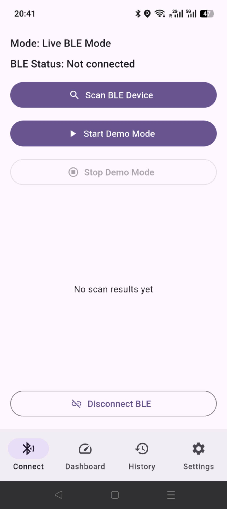
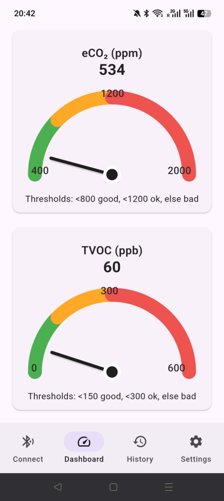
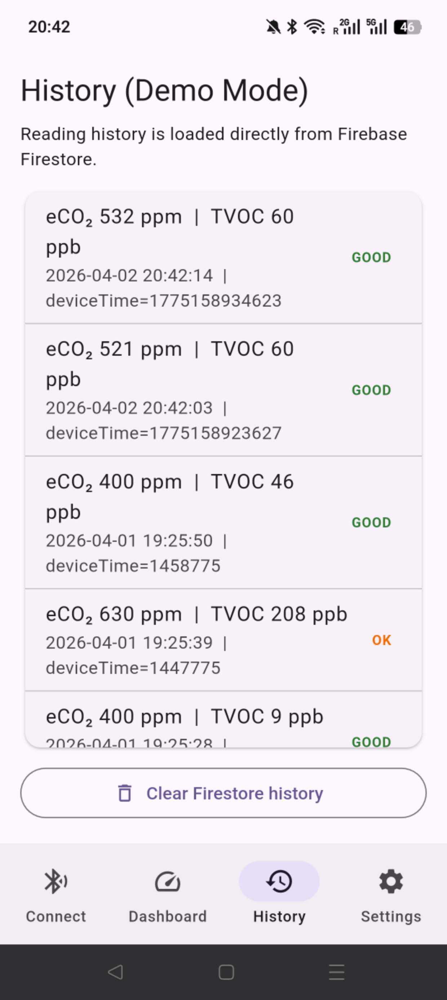
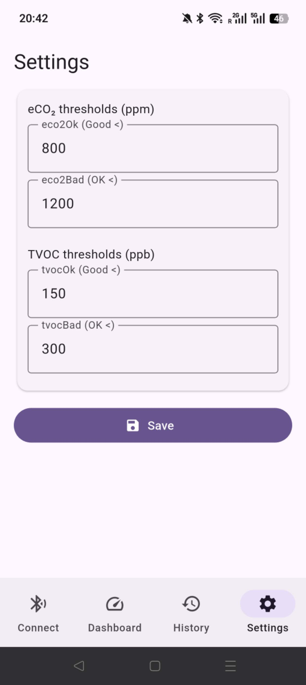

A mobile system for real-time indoor air quality monitoring that combines SGP30 sensing, Bluetooth Low Energy communication, intuitive mobile visualisation, and Firebase cloud storage.
Indoor air quality is invisible but directly affects health, comfort, concentration, and productivity. Existing tools often show raw values without presenting meaningful, user-friendly feedback.
High CO₂ levels can reduce concentration, increase fatigue, and negatively affect decision-making.
Poorly ventilated rooms make it difficult for users to detect unhealthy conditions without dedicated monitoring.
Children, elderly people, and users with respiratory conditions are more vulnerable to poor air quality.
The application is designed as a complete end-to-end monitoring interface for device connection, real-time feedback, historical review, and threshold customisation.
The system combines embedded sensing, wireless communication, mobile interaction, and cloud persistence.
Scan BLE devices, choose a sensor, and establish the data source for live monitoring.

Show live eCO₂ and TVOC values with gauges and threshold-based visual feedback.

Display timestamped historical records from Firebase for trend tracking and persistence.

Adjust thresholds and personalise how the app interprets indoor air quality.

The system supports hardware-independent evaluation through a fallback testing workflow.
When a BLE device is unavailable, the app can switch to an internally generated data stream. This keeps the dashboard, history, and Firebase workflow fully functional during testing or assessment.
A dedicated service generates readings at fixed intervals using bounded value ranges and small step-by-step changes, producing smooth, realistic eCO₂ and TVOC trends instead of random noise.
The repository includes the Flutter mobile app, Arduino firmware for the SGP30 sensor node, screenshots, and project documentation.